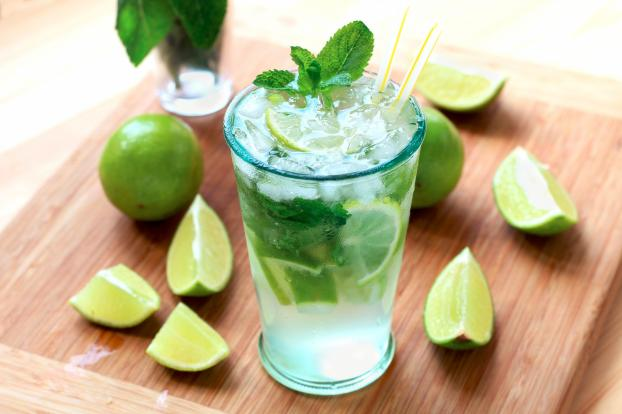

ht03: recette du mojito

Ingrédients (pour 2 personnes)
- 4cl de rhum blanc
- 2 cl de sirop de sucre de canne
- 6 à 8 feuilles de menthe
- demi citron vert
- Un peu d'eau gazeuse
- 10 glaçons
Matériel
- Couteau d'office
- Rouleau à pâtisserie
- Pilon à cocktail
- Torchon
Préparation
- Mettez vos glaçons dans un torchon, refermez-le puis, à l'aide d'un rouleau à pâtisserie, pilez la glace
- Vous pouvez encore avoir des morceaux. Versez dans un bol et réservez au congélateur
- Versez les feuilles de menthe dans chaque verre
- Coupez le citron en deux puis chaque demi citron en 6 morceaux
- Un peu d'eau gazeuse
- 10 glaçons
- Ajoutez les 6 morceaux de citron dans chaque verre (1/2 citron)
- Ajoutez le sirop de sucre de canne
- Ecrasez le citron avec un pilon spécial cocktail
- Ajoutez la glace pilée en laissant 2 cm de libre. Plus il y a de glace, moins elle fondra rapidement
- Ajoutez le rhum
- Complétez avec l'eau gazeuse
- Mélangez le cocktail afin que les saveur se mêlent
- Servir le mojito avec deux pailles qui vont permettre de mélanger le cocktail au fur et à mesure de la dégustation
Source : 750g : Mojito : Le vrai